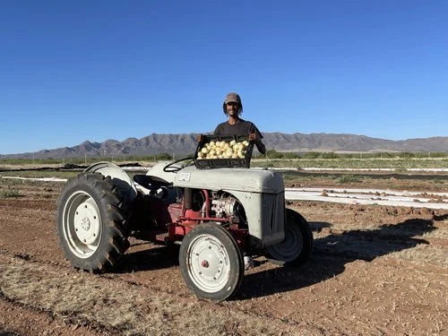

Desert Sky Produce
A McNeal farm helping strengthen local food access and opportunities for small producers throughout Cochise County.
MEET THE FARMER
John Benedict moved to McNeal in 2018 and founded Desert Sky Produce in late 2020. Seeing the need for stronger local food access and better outlets for small farmers, ranchers and producers, he went on to co-found The Local Co-op.
His community work has included produce-prescription programs, the McNeal food bank, the Cochise Mobile Market and Cochise Farm to School, connecting local agriculture with food access, education and community health.